Sample tutorial
In this introductory tutorial you will learn how to enter data, make fit with a library function, generate text and graphical report, add custom function and fit data with it, log results and define derived values.
To enter new data select Data > New from the menu, click on the New Data button or press Ctrl+N keys :
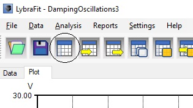
Enter ‘Sample Data’ in the title box of New Data dialog and press Ok button:
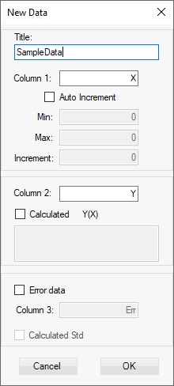
To set table columns format choose Settings > Table Columns from the menu or Alt+C keys and select Numeric format for X and Y columns. You can also change the column caption of a column or hide it:
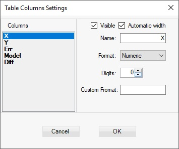
Set Numeric format for X with 0 digits and for Y with 2 digits and click Ok button. Enter the following data in the table:
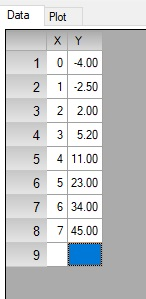
Switch to plot view by selecting Data>Graph view from the menu or pressing Ctrl + G keys:
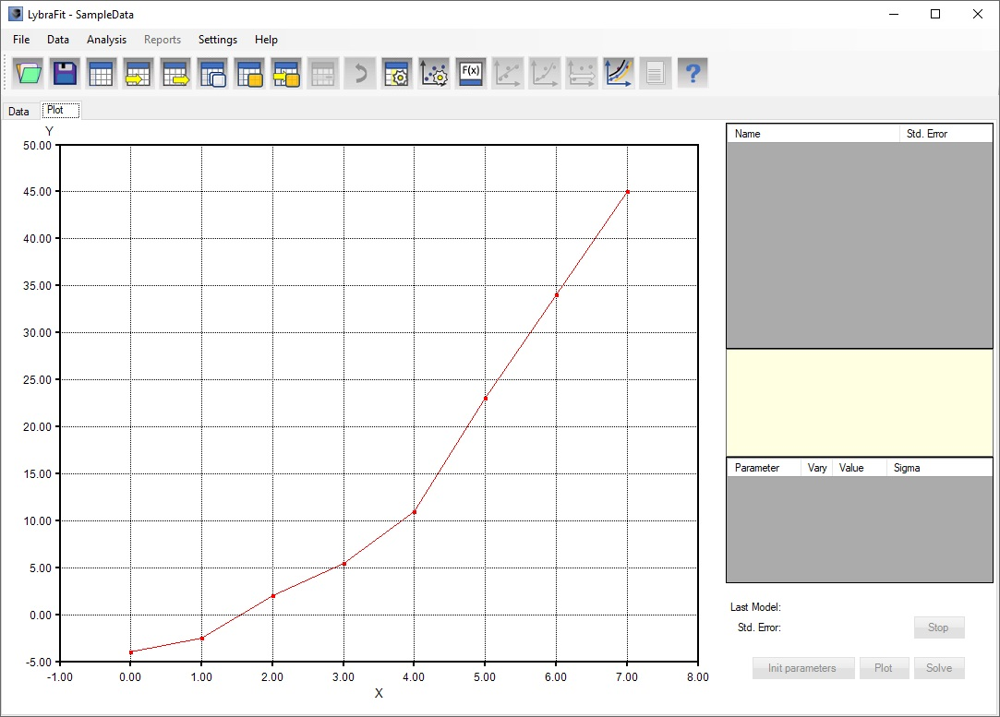
Open the Models dialog by selecting Analysis > Add Models from the menu or pressing Ctrl+M keys:
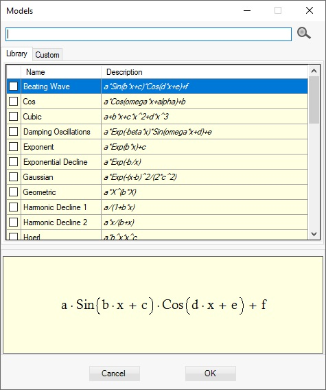
You can filter the list of shown models by entering keywords in the search text box. To enter more than one key word separate them with comma. Only models which have any of the keywords in the name or description will be listed.
Enter ‘Par’ in the Filter text box.
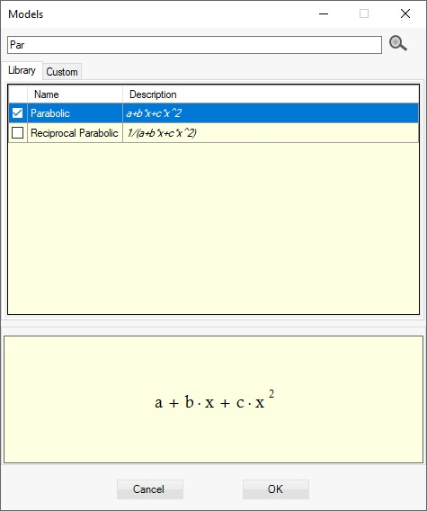
Select the Parabolic function and Click Ok button. The Parabolic model is added to Models Table, parameters are initialized to values which will produce good approximation of the data and are displayed in Parameters Table.
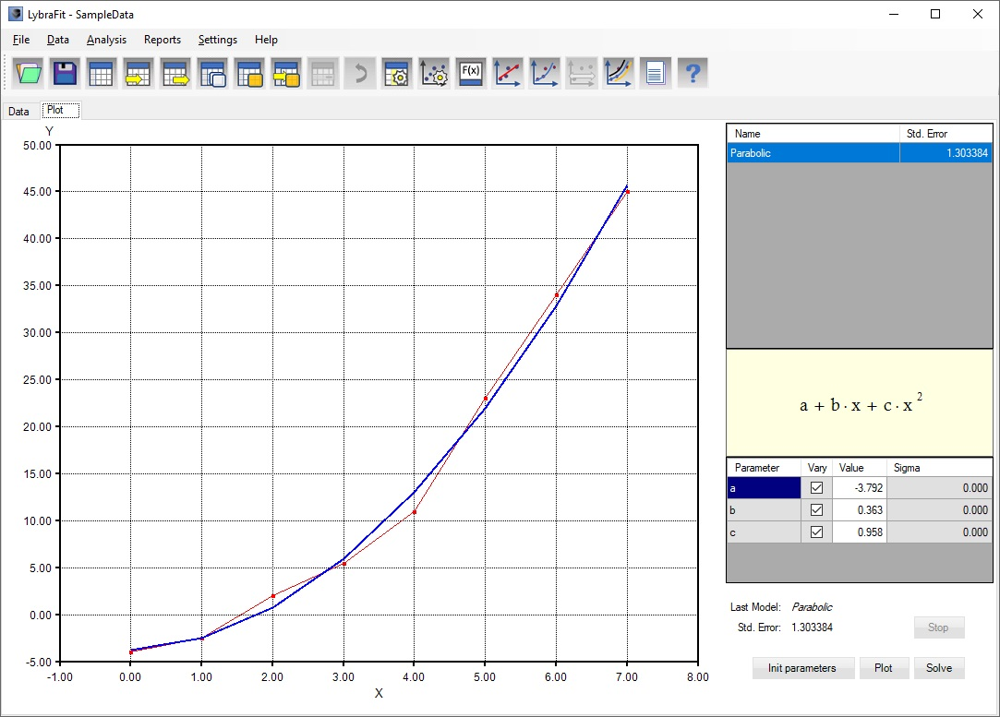
If the model function is from the built in library, its parameters are automatically initialized and the approximated curve is plotted. If you change those parameters you can reinitialize them pressing the Init parameters button on the regression control group. For user defined or custom function, the initial parameters must be set manually. However the last parameters set is kept for each user model function. Click on Solve button to refine the fit. This will refine the parameters and will calculate the sigma (uncertainty of their values). Select Reports > Generate Text Report from the menu or press Alt+T keys to generate text report:
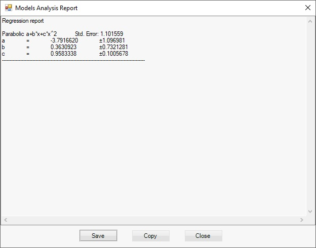
Regression results can be added for specific model and different data. To log regression result right click on model parameters table and choose Log Results or press Ctrl+R keys:

In the Log Result dialog enter name for instance ‘SampleData_1’ for the log record and click the Ok button:
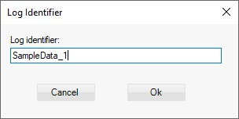
Table with logged regression result for specific model is shown:
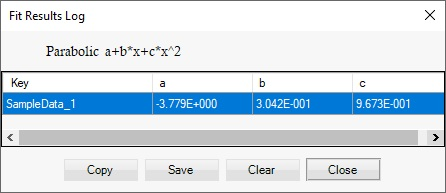
The Fit Log Report is not saved as part of the project.
Select Reports > Generate Graph Report from the menu or use keys Alt+Gto generate graphical report. The Plot Export Dialog opens. Check the Line 2 check box and click on Parameters as legend button. The math expression of the model used together with parameters is generated for the second line of the title:
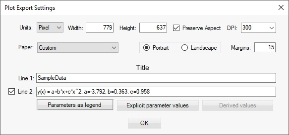
Click Ok button to show the graphical report preview:
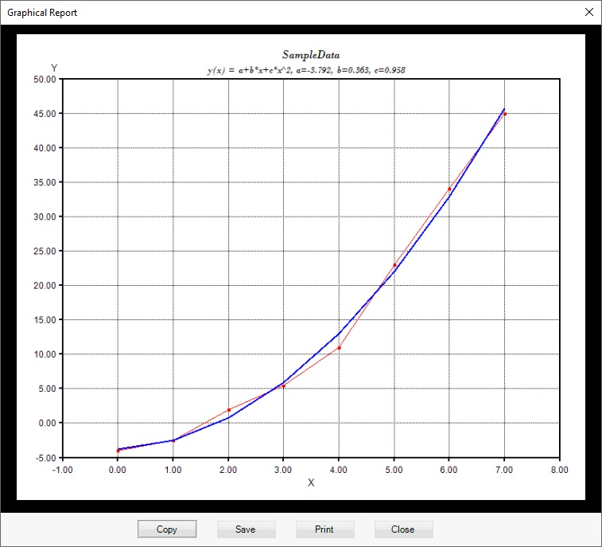
From here you can copy the report to clipboard and paste the image into another application, save it to a file, or print it.
Sometime the value we are interested in is not exactly a parameter in the model but a function of the model prameters. In those cases you can define derived values. Choose Analysis -> Derived values from the menu, or press Ctrl+D, or right click on the parameters table and select Derived values:
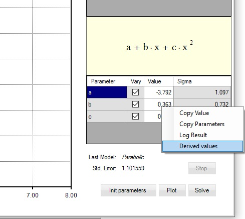
The Derived values dialog opens. Enter name of the derived value and the math expression, which must include only parameters from the model and numbers:
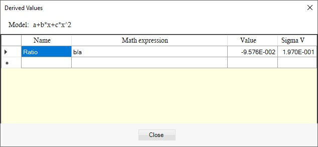
Once the math expression is entered the value and its uncertainty is calculated. The value is update every time you open the dialog.
You can make the derived values to be shown on the graphical report by selecting this option. Press Derived values button on the graphical report dialog (Ctrl+G keys). For better print quality select A4 source for the paper:
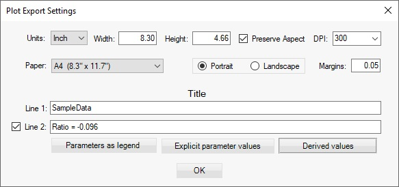
Press Ok button. The graph report preview is shown:

To make approximation with custom function which is not in the library open the Models dialog from the menu Analysis > Add Models or press Ctrl+M keys. Switch to ‘Custom’ models tab using the mouse click or press Ctr+U Keys.
Click on ‘New’ button to open the Math Expression Editor. Enter name and math expression, for instance: ‘Shifted Parabolic’ for name and a+b*(x-s)+c*(x-s)^2 as show in the picture:
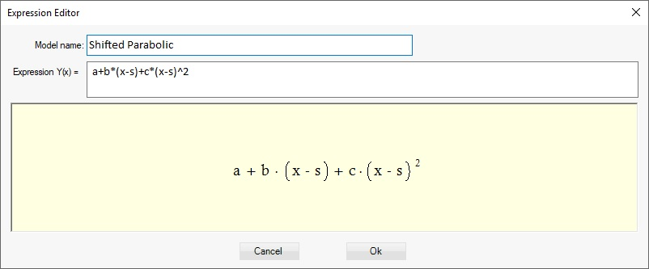
Click Ok. The new function is added to the set of custom functions:
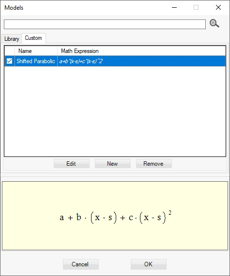
Select the function by checking the check box in the first column and click Ok button. The new function is added to the models:
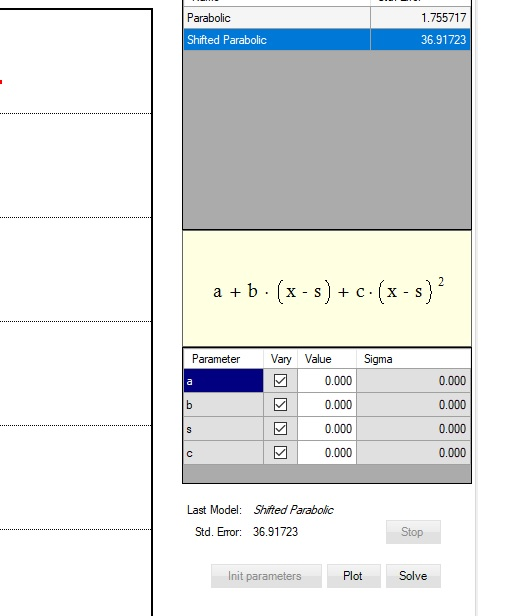
Enter some values for the parameters until you find some plot close enough to the data. Every time a parameter value is change the plot is refreshed automatically. Once the approximation is relatively good you can refine it by clicking the ‘Solve’ button or the keys Ctrl+F :
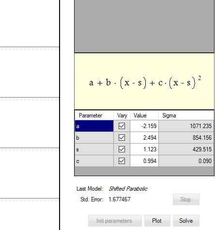
To save your work choose File > Save or File > Save As from the menu. This will save the last data, models, derived values, graph and table column settings but not the fit result log.
To continue your work from where you left it open it using menu commands File > Open or Ctrl+O keys.